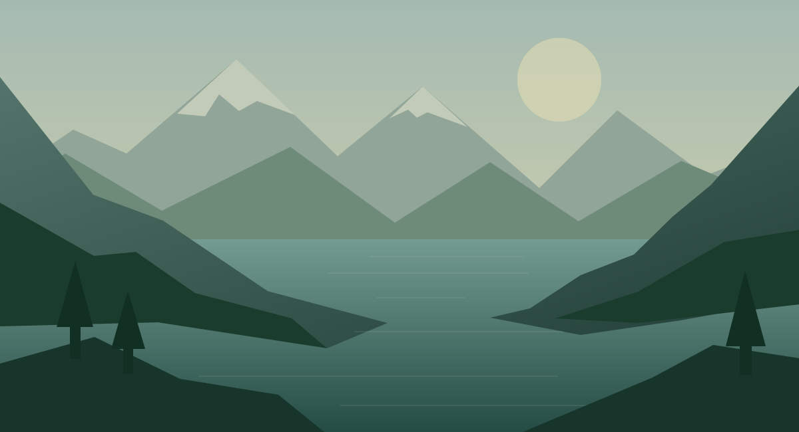
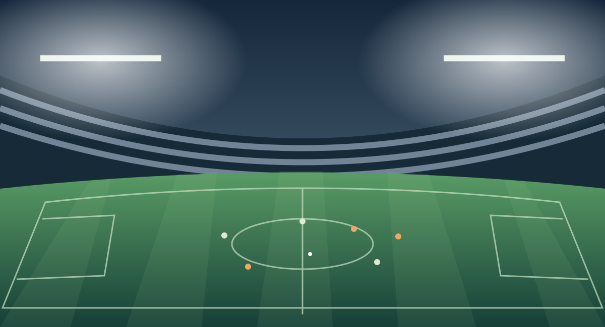

A pause, without the rush
Need to take a call? Pause live TV and resume from where you left off. Catch-up lets you return to programmes that have already aired.
On channels with provider catch-up support


21:00 Along the mountain trails
22:00 Inside the ocean
PiP · two channels side by side. Try swapping the windows.
Interactive feature illustration. Channels and videos are examples.
Original, Graphite, Cool Glass, Warm Glass and High Contrast. Pick a preset or make it your own in Interface → Themes.
Each colour has six swatches and a “+” for custom input. Adjust panels, primary and secondary text, selection fill and border. Border width has its own control.
Try the colours here. This is an illustration; your app settings stay unchanged.
Inside the ocean · 22:00
In the app, transparency and scale are separate settings under Interface.
Search channels and programmes in one source or across all of them. Find what’s live, coming up or available in catch-up.
Hold ↓ while watching → Search → OK. Enter a title using the remote-friendly on-screen keyboard or a physical keyboard.
Press OK on a programme result → Add bookmark. Return to it in the top panel’s Bookmarks tab: hold ↑.
Programme search uses the downloaded guide. Programme bookmarks require a catch-up channel; viewing availability depends on your provider.
PROGRAMMES · ALL SOURCES
NATURE · Today · 22:00–23:00
Turn on PiP: your current channel moves to the small window and the previous channel opens in the main view. Follow the match, return to your film and swap windows whenever you like.
Settings → Interface → PiP. Move the window in 5% screen steps with the arrow keys. The default width is 25%; adjust it with left/right. OK saves; Back cancels.
Try PiP in the illustration ↑Two streams need support from your source and device. When lighter variants are available, the player can reduce quality to keep playback going. Not every TV box can handle two UHD streams.
Watch now, come back later or keep a copy. Make television fit your plans.
Need to take a call? Pause live TV and resume from where you left off. Catch-up lets you return to programmes that have already aired.
Start recording live TV or schedule a future programme. Keep watching another channel while the recording runs independently.
Open saved programmes and your own videos from one folder. Pause, seek and choose tracks with familiar controls.
Bring your favourite channels into your own groups. Movies from one source, sport from another — switch between them without leaving My playlist.
Group · Tonight
Illustration of a playlist combining sources
Hold OK on a channel to add it to favourites or a group in My playlist. You can also add the current channel from the toolbar.
Settings → My playlist: create, rename and delete groups. Use the channel menu to reorder channels or move them between groups. Removing a channel from your selection keeps the original channel.
Save a moment from live TV or catch-up in the toolbar. Or hold OK on a programme in search and bookmark its start. Open saved moments in the top panel’s Bookmarks tab.
For channels with catch-up. Bookmarks remain playable while the provider keeps that part of the archive.
Recordings, plans and bookmarks in one top panelChoose a future programme in the guide or programme list. Set a reminder, schedule a recording, or do both.
NATURE · 20:00–21:00 · 60 minutes
Your programmes and videos. Ready when you are.
A centred popup in the app. A notification in the background.
NATURE · Today · 22:00–23:00
A programme at 22:00? Recording starts at 21:59:30. Cancel an upcoming plan anytime.
NATURE · Closer to nature · 20:42
Open · DeleteBookmarks survive app restarts. Protected channels require a PIN.
← → switch tabs from anywhere in the panel
Illustration · try the tabs and keyboard arrows
Edit names, addresses and connection details. Set channel and EPG updates individually for each source. Find everything in its own submenu.
You choose which channels and groups need a PIN. Hold OK in the channel or category list to manage protection right where you browse.
Manual protection inside the player. Content is not classified automatically.
Access selection illustration · protection returns when the app goes into the background
A three-hour guide with navigation from programme to programme. Press OK to watch, or hold it for actions. Protected content asks for a PIN first. On phones, use the on-screen remote in landscape.
In the guide: select a programme
On a channel or programme — start watching immediately
Hold to open recordings and plans
Hold to open the tools
Choose the main window or PiP. On a channel, also manage favourites, groups and PIN protection
A complete feature overview. Open a section to explore the details.
Lumora TV Player is a player. Channels are not included: use your own playlist or IPTV provider account.
Install on Android 8.0 or later. Choose English or Russian on first launch.
Enter an M3U playlist or your Xtream Codes details. Add an XMLTV source for the guide if needed.
Open a favourite channel, try PiP or schedule tonight’s recording.
The app does not sell or provide channels. You need an M3U playlist or Xtream Codes account. Access terms, programme information and catch-up depend on your source.
Android TV, Google TV and phones with Android 8.0+. Phones support touch, address pasting and an on-screen remote in landscape. Format support depends on the device and decoder.
For two TV channels, your source must allow simultaneous connections and your device must decode two streams. Combine live TV, catch-up and local video. The player can switch to lighter variants when available; it cannot turn a single UHD stream into HD. Two UHD streams are not guaranteed on every TV box. Live pause requires provider catch-up support.
Choose a future programme in the guide or programme list. Recording starts 30 seconds before it begins and ends at its EPG end time. Android 12+ may require exact alarm permission. The device must be on, with the stream and folder available. Android background restrictions can affect starting; recording is not guaranteed after force-stopping the app.
The default folder is Movies/GlassIPTV. You can choose another accessible folder, including USB. One channel can be recorded at a time. Recording supports direct MPEG-TS and unencrypted HLS with TS segments; playback of your own files depends on format support.
Your channels. Your recordings. Your way to watch.